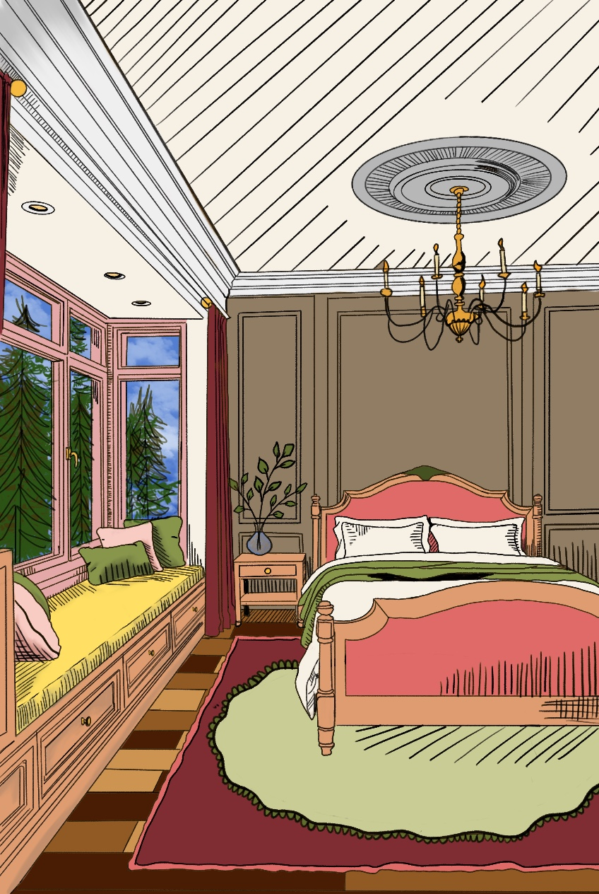

Info on the Iced Matcha Latte Room:
Our Iced Matcha Latte room is made to feel like you are in the spring/summer season!
We provide you with a warmer room and many ligther blankets so that you can enjoy your iced matcha latte.
Of course if the room gets too warm for you we provide a remote so that you could control the room's temperature.
~~~~~~~~~~
Sleeping & Comfort:
* Bedding: King bed with a memory foam matress, a plush down-alternative duvet, and a spare blanket at the foot of the bed.
* Climate Control: Automatically on a warmer setting, individual room thermostat.
~~~~~~~~~~
Bathroom Essentials:
* En-Suite Bath: Private bathroom featuring a walk-in shower.
* Linens and Robes: Fluffy pink bath towels, green hand towels, and soft yellow bathrobes.
* Toiletries: Shampoo, Conditioner, body wash, bar soap, and hand lotion.
* Conveniences: Covered step trashcan, extra toilet paper, a plunger, and subtle air freshner.
~~~~~~~~~~
Refreshments and Welcome Touches:
* In-Room Refreshments: Matcha bar with different flavored syrups, bottled water, and small snacks that are compatible with your iced matcha latte.
* Small Luxuries: Reading material, ice machine, and a fresh plant.
~~~~~~~~~~
Technology and Practicality:
* Connectivity: High-speed free Wi-Fi with a clearly displayed password card.
* Power and Charging: Easily accessible bedside power strips, and wall outlets.
* Entertainment and safety: Small TV with streaming options, and a room key.